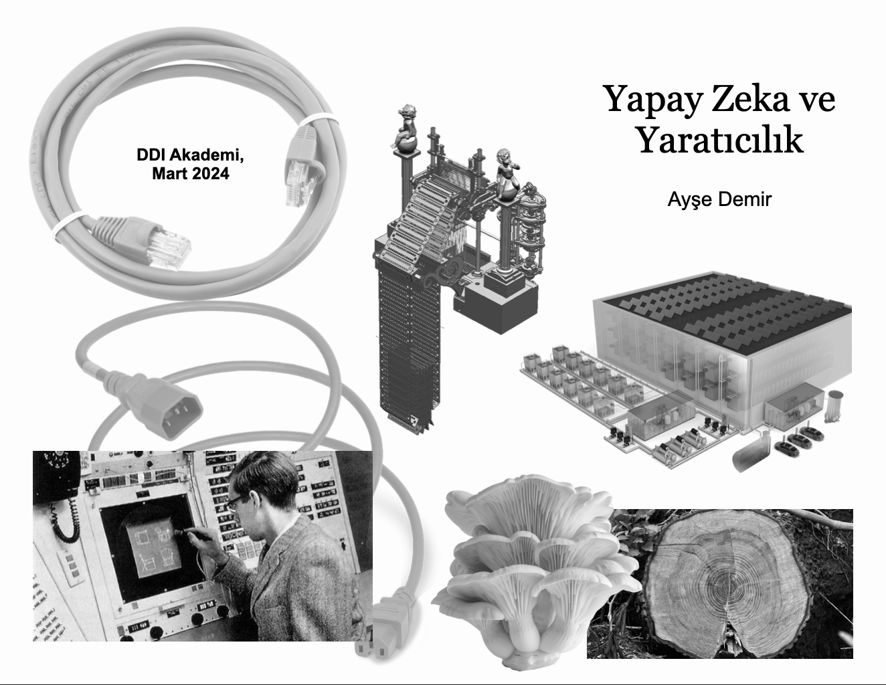
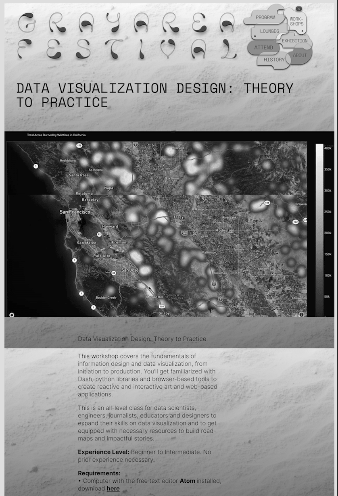
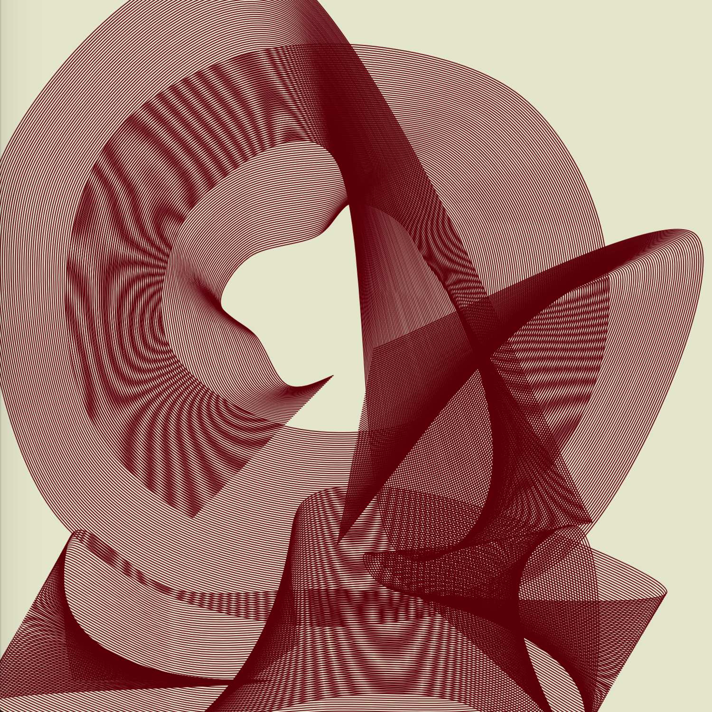
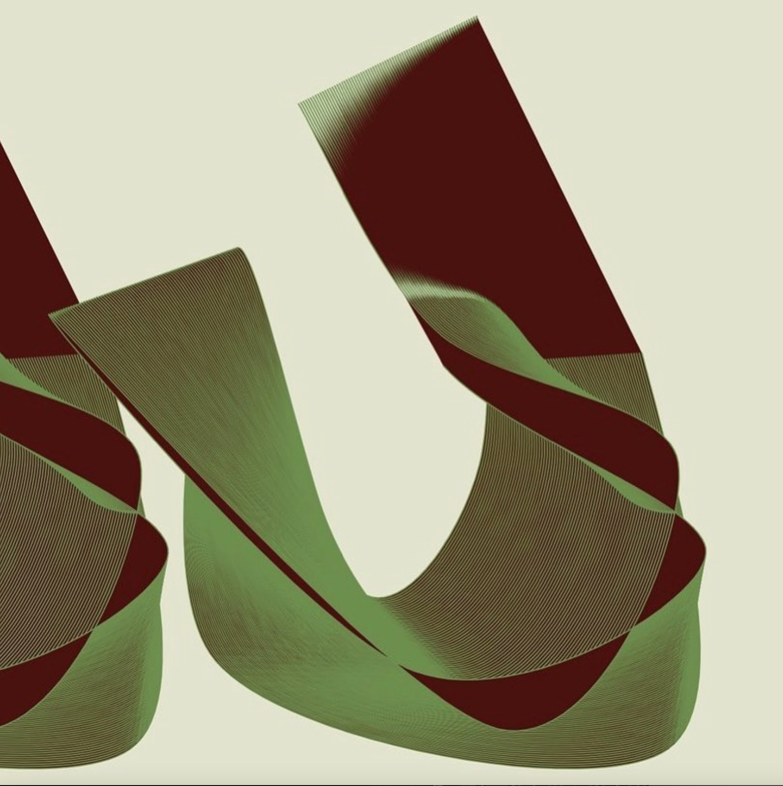
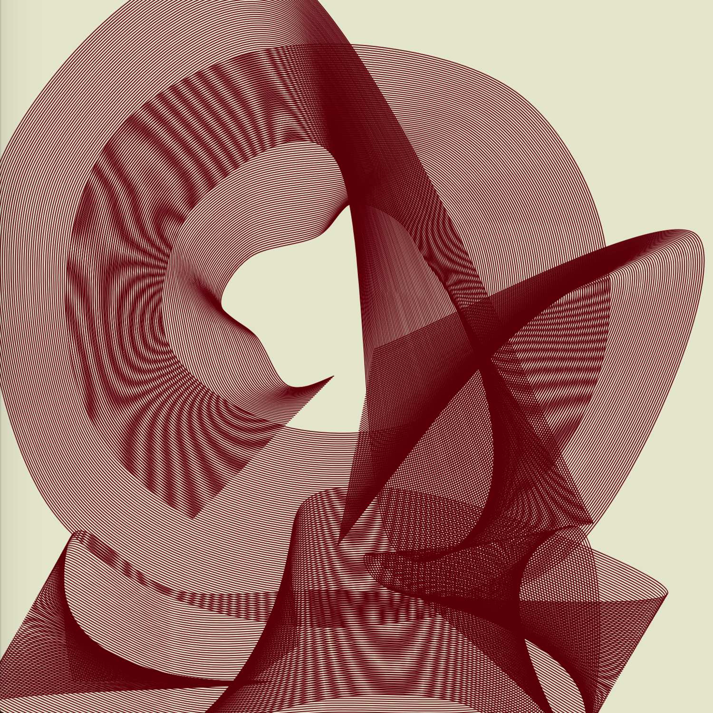
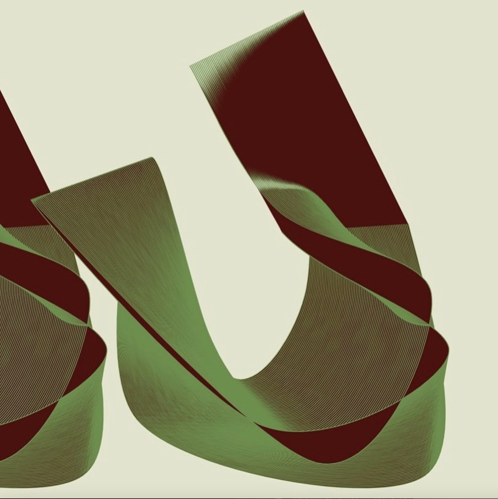
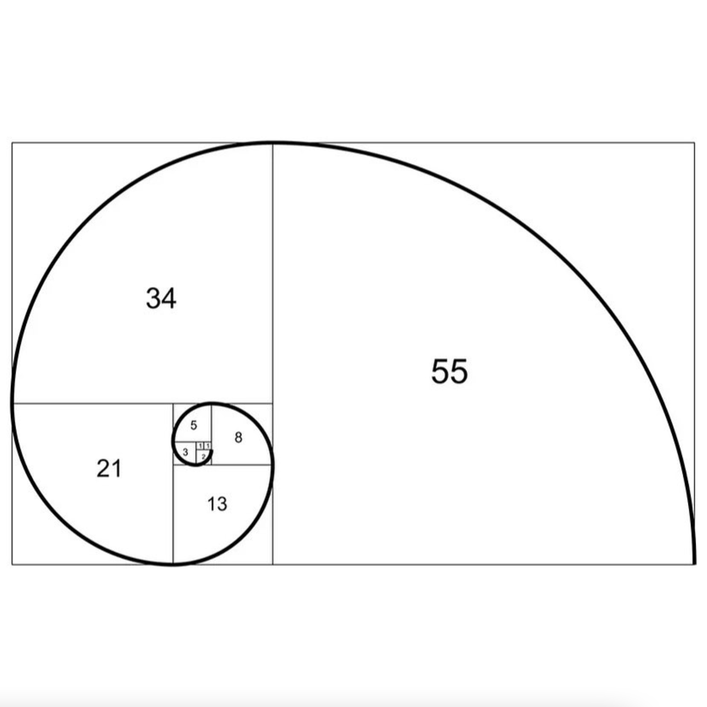
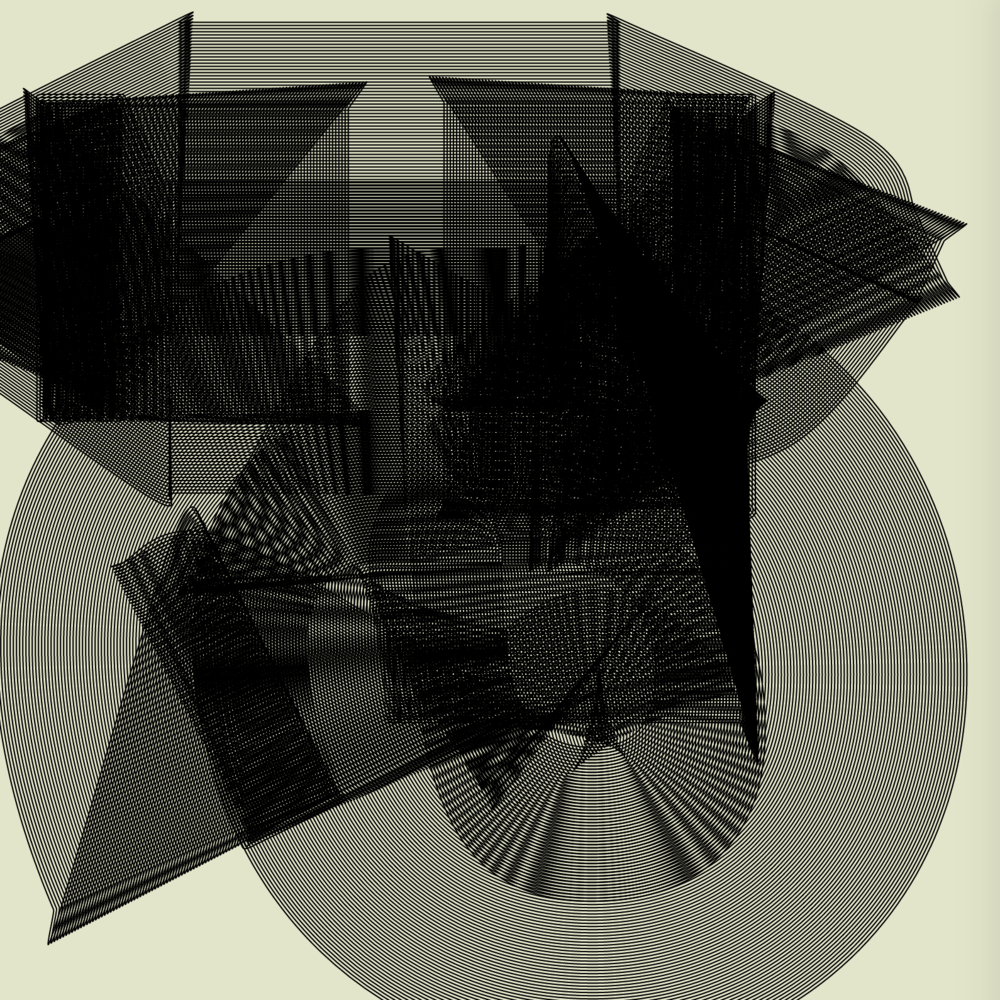
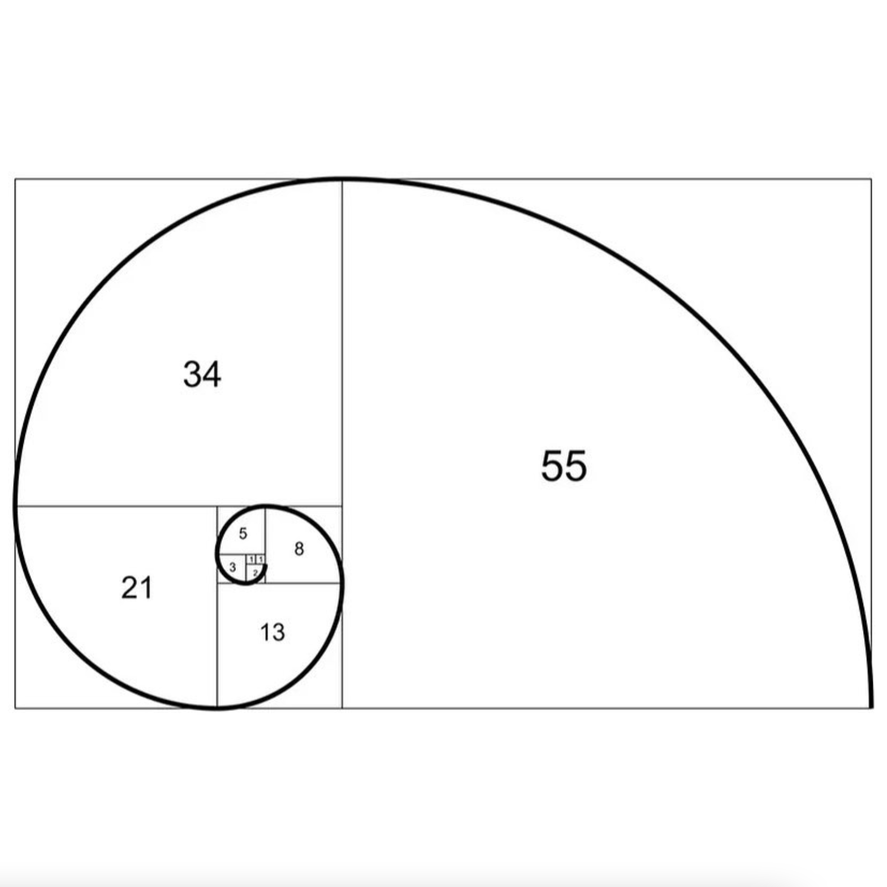
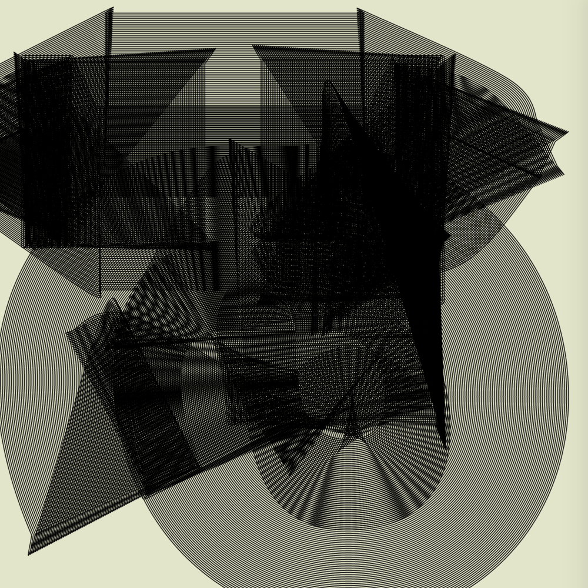

Born and raised in Turkey, I'm a San Francisco-based multidisciplinary artist and data scientist with a passion for seeing and creating beautiful things. Last year I quit my big-tech job to focus on philosophy, teaching yoga, and exploring consciousness. In all aspects of life, I love working with complexity—finding clarity, truth, and balance within it. My interests and curiosity across various fields help me build meaningful connections and understand the world as it is. I'm fascinated by giving form to ideas and emotions through writing, code, and movement. As a certified yoga teacher, I work to bring more strength, gentleness, and awareness to my communities. I'm also a martial arts beginner, continuing to explore different ways of embodying presence and discipline. Whether through data, art, or contemplative practice, I'm drawn to the intersection of analytical thinking and creative expression. I am self-directed and taught. My curiosity drives my creativity.
WRITING & TEACHING SAMPLES
Here, I've summarized some of my thoughts from Substack posts and classes I taught to demonstrate my way thinking, developing and presenting an idea.
Can a micro-pause nudge AI from automatic response to something closer to human-like awareness?
I distinguish response from reaction in machine behavior. Today’s models excel at response—a form of task-consciousness that aligns internal patterns to the prompt and returns the most fitting continuation. Reaction is different: a rapid, sometimes non-rational surge shaped by prior conditioning or imagined futures. I’m exploring whether a deliberate micro-pause—a forced gap that allows the system to check, reframe, or inhibit its first impulse—changes behavior in measurable ways, nudging models from pure resonance with the task toward something closer to human-like awareness.
Experiment structure: [Describe your structure for this experiment here.]
Difference-Through-Repetition
Creativity lives in repeats that are never identical. By asking a model to re-generate the same prompt under slight noise, I watch for meaningful variation rather than random drift. My question is whether structured randomness—“repetition with difference”—reveals richer patterns than a single polished answer, and how that diversity can be kept useful, not chaotic.
Experiment structure: [Details for experiment 2]
Perception Expansion
Good language output can feel like a lens widening my attention. Instead of copying my words, the model renames half-formed notions and points to flanking ideas I hadn’t noticed. I’m mapping how far suggestions can stray from the seed before coherence snaps, and whether that sweet spot reliably nudges my questions forward.
Experiment structure: [Details for experiment 3]
Abstraction over Pixels
Adding detail alone is like upping screen resolution—more pixels, same picture. I’m exploring whether models can climb a notch higher, compressing many concrete examples into portable abstractions. The aim is to see internal states cluster by underlying rule or structure, not surface wording, and to test if those abstractions survive into novel situations.
Experiment structure: [Details for experiment 4]
Non-Separable Credit
In real collaboration, “what percent was the AI?” resembles asking “what percent of a melody is the violin?” I treat contribution as a property of the whole sequence of moves. By shuffling who drafts first, who edits last, I watch how outcomes—and any stab at credit assignment—swing, looking for moments where synergy outstrips tidy partitioning.
Experiment structure: [Details for experiment 5]
Resonant Spaces with Spatial Sound
In group yoga I sprinkle slow, room-scale audio sweeps that move like a shared breath. The question isn’t just aesthetic; it’s whether predictable spatial motion entrains collective tempo, lowers variability in breath and attention, and deepens the felt sense of coherence without verbal instruction.
Experiment structure: [Details for experiment 6]
AI as Rhythm-Sensitive Co-/De-Regulator
Sometimes we need grounding, sometimes disruption. I’m exploring adaptive timing strategies where the system first detects a user’s state—calm, hurried, scattered—then decides to either match pace and soothe or intentionally offset rhythm and energise. The goal is a conversational partner that modulates, rather than merely mirrors, the human nervous system.
Experiment structure: [Details for experiment 7]
Artificial Intelligence & Creativity (March 2024)
This class design was inspired by Jessica Riskin’s The Restless Clock and explores comparative frameworks drawn from two major theories of living systems. We will investigate what happens when the interfaces we design begin to learn from our real-time interactions—blurring the boundaries between user and system, subject and object. Where does creative agency begin and end when our creations become active participants in the exchange?
Data Visualization Design
This course traces the evolution of data visualization from its origins—tables, maps, and the invention of Cartesian coordinates—to contemporary practices in interactive web-based visualizations. We will explore how humans have long encoded data in symbols and structures, and ask: how can interaction itself become a form of encoding and understanding information? Students will engage with core principles of data visualization, learn how meaning is shaped through visual representation, and critically examine both the power and limits of visual data. In the second half of the course, we’ll move from theory to hands-on practice, using Python and Dash to build interactive visualizations for the web. By the end, students will be able to design and implement data-driven web applications, and think critically about how interaction shapes our engagement with data.
Creative Coding Intensive
Methods for evaluating whether AI outputs after a pause are measurably more “human-like,” and reflections on implications for future research.

VISUAL EXPERIMENTS
 



Traditional software operates as a disembodied logic—an abstract pattern detached from physicality, often manifesting as rigid, systematic forms. My experiments seek to invert this paradigm: What if computation could embody softness, intuition, or organic ambiguity? Using p5.js as a digital sketchbook, I explore how algorithmic processes might evoke forms that feel alive, resonant, or emotionally charged—inviting computation to ‘inhabit’ the fluidity of the physical world, rather than merely describe or simulate it. I have experimented with many softwares and their constraints. The more abstract ones like p5.js, c++ and the less abstract ones like TouchDesigner and Maya. How can software and code become less about cold abstraction, and more about producing felt, and spatially charged experiences? I treat digital tools not as endpoints, but as collaborators in a broader search for resonance between the virtual and the physical. This is not just a technical exercise, but a philosophical provocation: Can code become less like a set of static instructions and more like a living material, responsive and emergent? In these visual experiments, the digital realm becomes a site for new forms of embodied creativity, where the boundary between algorithm and intuition dissolves. Experiments with p5.js, shortlisted for MIT Media Lab Future Sketches group. Full portfolio available upon request.
 





Here, prompting is a kind of poetic curation. It is less abstract then the pure code or pixel itself, not a dot so it requires searching. I keep searching, refining, and tuning until a form appears that I can actually empathize with—when the image feels less like code, and more like something alive in me that was expressed. Prompt is the intent, finding the right output is the expression.
LINKS & REFERENCES
HuggingFace
Sample project links on AI prototypes.
LinkedIn
Professional network and background.
Substack
Essays, reflections, and informal writing in Turkish & English.
Barry Threw
Executive Director, Gray Area Foundation for the Arts. Supervisor (2019-2023).
Jasmine Tarkeshi
Yoga Studio Owner & Senior Teacher; Author. Supervisor (2018–present); Teacher (since 2017).